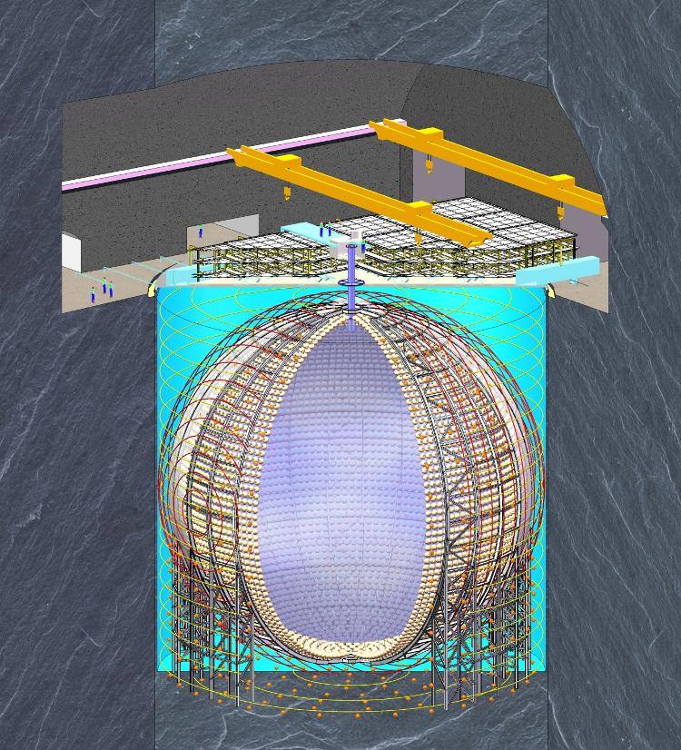
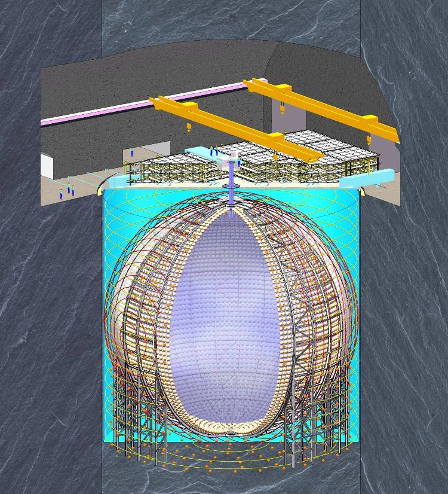
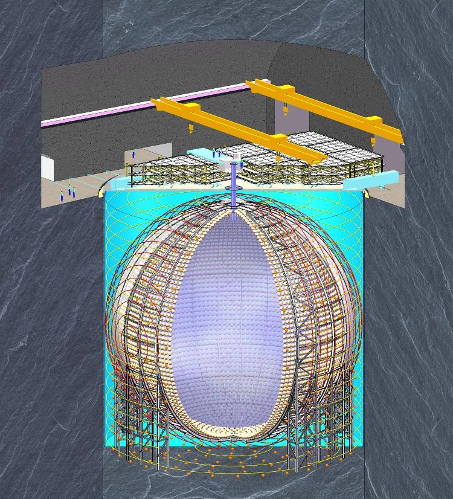

Email: zel032@physics.ucsd.edu
I am an Assistant Project Scientist at the University of California San Diego. My research focuses on neutrino physics, machine learning algorithms for data analysis, and development of cryogenic systems for particle detection experiments. I will start as an assistant professor of physics at University of Hawaii at Manoa in Jan 2025.
